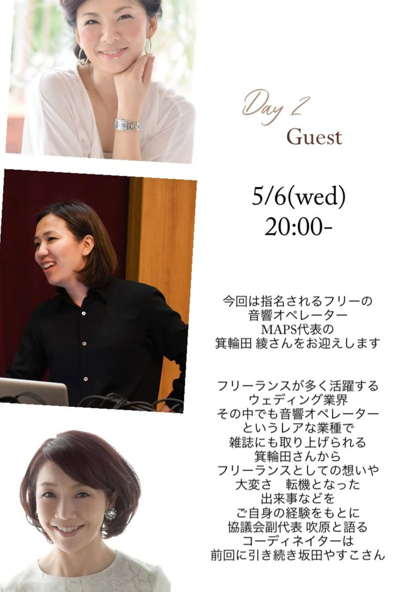

第2回インスタライブを【5月6日(水) 20:00-】に行います！！！！

指名されるフリーの音響オペレーター／MAPS代表 箕輪田 綾さん
フリーランスが多く活躍するウェディング業界。そのなかでも、音響オペレーターというレアな業種です。
披露宴の音楽は、鳴っていて当たり前のものだと思われがちです。けれど実際には、新郎新婦の入場の一歩に合わせて音量を上げ、涙が流れる瞬間には曲を邪魔しないよう引く。誰にも気づかれないところで、その日の空気を静かに設計している人がいます。
そして「指名される」ということ。フリーランスにとって、名指しで仕事が来るというのは、何よりの評価です。
雑誌にも取り上げられる箕輪田さんから、フリーランスとしての想いや大変さ、転機となった出来事などを、ご自身の体験をもとに、協議会副代表の吹原と語ってもらいます。
いまフリーランスとして踏ん張っている方、これからその道を考えている学生の方にも、きっと届く話になるはずです。
前回に引き続き、MCの坂田やすこさんです。
前回はみなさまに温かく見守っていただき、初めてのインスタライブをなんとか終えることができました（笑）。段取りに手間取ったり、音声が途切れたり——お見苦しいところもあったかと思いますが、コメントで励ましていただいたおかげで、最後まで走りきることができました。
今回は準備万端でいきます！！ おたのしみに。
「愛知ウェディング協議会」で検索、またはInstagramアカウント【aichi_wedding.council】をご覧ください。アカウントをフォローいただくと、ライブ開始時に通知が届きます。ご質問はDMやコメントで、事前にもお寄せいただけます。